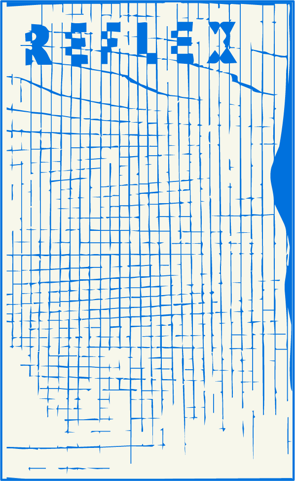

manufacture errata website
manufacture errata Facebook
manufacture errata Instagram
melchior mercure Instagram
giphy
Les Champs de Perséphone
fanzine musical Fond de Caisse
INTW
Cosmic Cassette
Cosmic Cassettes sur Facebook
Cosmic Cassettes sur Instagram
Cosmic Cassettes sur Soundcloud
Grégor de La Fanzionothèque de Poitiers sur radio Pulsar nous parle du label Manufacture errata, côté image :
Julien de l’émission L’autoradio k7 sur radio Vassivière nous parle du label Manufacture errata, côté son :
Interview sur le Podcast de radio Nova :
manufacture errata(sound cloud)
manufacture errata(bandcamp)
Souvenirs k7
Concept-cassettes
errata 20 series
compilation Smokers
THX 1137 sur Bandcamp
THX 1137 sur Soundcloud
THX 1137 sur Viméo
And The sur Instagram
And The sur Bandcamp
Dhavali Giri sur Souncloud
Quantum Lips sur Souncloud
errata tv
astrid luzard
Nuevo Mundo Tele
astrid luzard Facebook
astrid luzard Instagram
Les Champs de Perséphone
cuisine